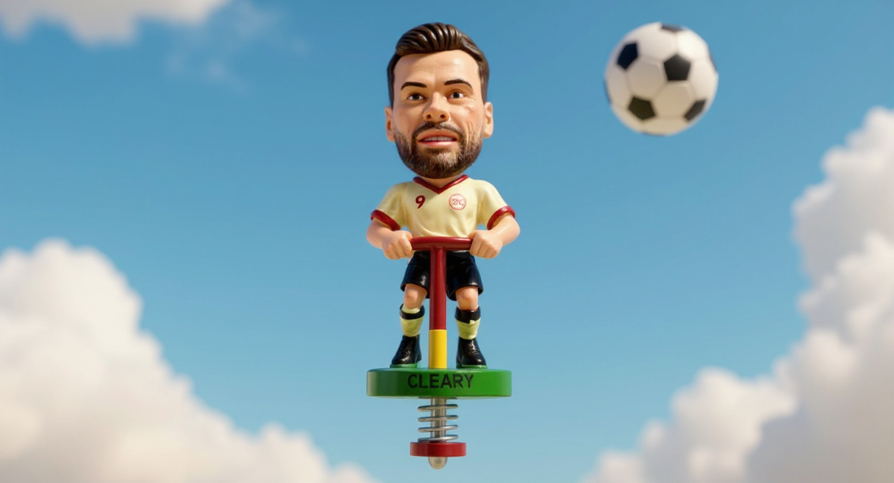

stephenjcleary

This year I've been trying to become fluent in as many aspects of AI for marketing as I can. Image generation, copy, research, strategy tools. But with Christmas around the corner I wanted to stretch into something I haven't pushed far enough yet: animation. I have a character brand asset, the football figurine, and one of the best things about having a character is flexibility. You can put them in situations. You can tell stories with them. So I decided to make a Christmas ad.
I started with a simple creative tension. The figurine is stuck to a green base. It can't cross the road. It can't catch the bus. It can't take the lift. Everyday things that are impossible when your feet are glued to a platform. Then, on Christmas morning, he opens a gift from me: a pogo stick. And everything changes. He bounces up to rescue a cat from a tree. He screws in a lightbulb. He spots a gold star in a shop window, grabs it, and places it on top of the town Christmas tree. A little bit of Christmas joy, delivered by bouncing.
Everything needs to stay consistent. The figurine has to look like the same figurine in every scene, and the world he's in has to feel like the same world. That's the hardest part of working with AI-generated images and video. Each tool wants to interpret things its own way, so you're constantly steering it back.
Expressions were tricky. The figurine's face couldn't distort or drift too far between shots or it stops looking like him. Subtle movement works. Anything too dramatic and it breaks the illusion.
Audio was completely new for me. Syncing the soundtrack to the edit meant getting precise with the timings in ffmpeg, making sure the music shifts landed on the right cuts. It took more trial and error than I expected, but when it clicks it makes the whole thing feel like a real ad.
I ran the finished ad through some qualitative research. Specifically, my niece. Her verdict: "so cool" and "better than the John Lewis ad." That'll do for me.